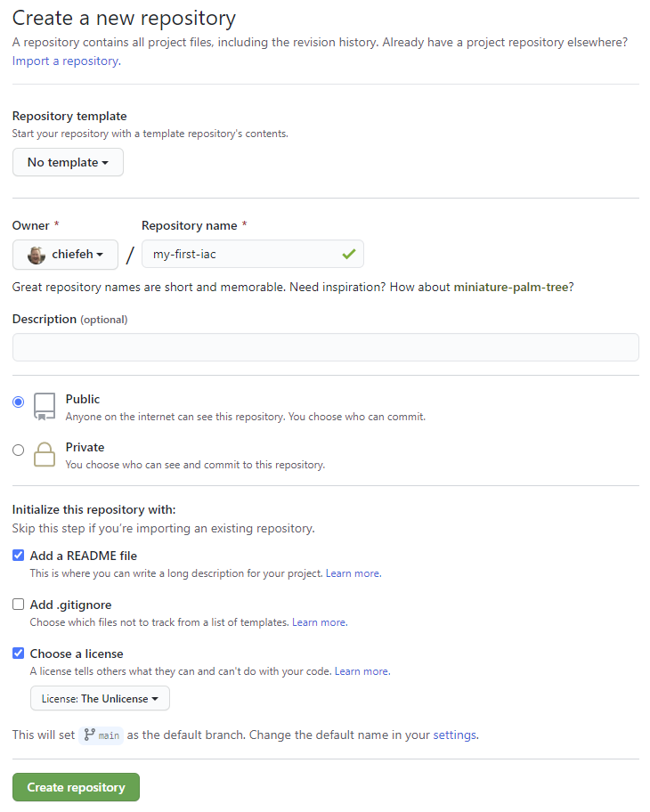
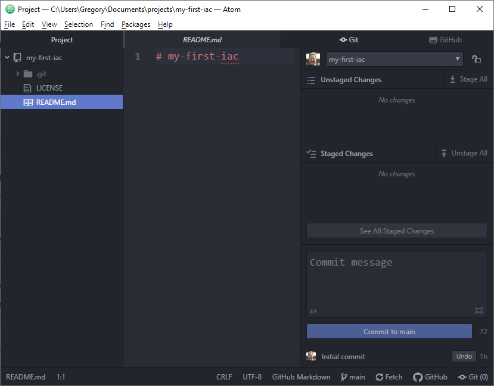

My First Infrastructure as code
Phase 0 - Bootstrap
Create a Code Repository
Before building anything, need to create the repo. I will do this just by using the GitHub website.
- Name the Repo
- Make it public to code in the open (but also doesn't use GitHub actions minutes)
- Add a README
- Use The Unlicense
- Use "main" as the default branch (instead of master)
The result creates this repository https://github.com/chiefeh/my-first-iac

Get the development environment ready
This document assumes the reader has git with ssh keys already setup. If not, reference the Git part of this site. Create a new directory on the local computer and clone the new repository.
PS C:\Users\Gregory\Documents\projects> git clone git@github.com:chiefeh/my-first-iac.git
Cloning into 'my-first-iac'...
Enter passphrase for key '/c/Users/Gregory/.ssh/id_rsa':
remote: Enumerating objects: 4, done.
remote: Counting objects: 100% (4/4), done.
remote: Compressing objects: 100% (3/3), done.
Receiving objects: 100% (4/4), done.
remote: Total 4 (delta 0), reused 0 (delta 0), pack-reused 0
PS C:\Users\Gregory\Documents\projects> cd .\my-first-iac\
PS C:\Users\Gregory\Documents\projects\my-first-iac> git status
On branch main
Your branch is up to date with 'origin/main'.
nothing to commit, working tree clean
PS C:\Users\Gregory\Documents\projects\my-first-iac> git remote -v
origin git@github.com:chiefeh/my-first-iac.git (fetch)
origin git@github.com:chiefeh/my-first-iac.git (push)
PS C:\Users\Gregory\Documents\projects\my-first-iac>
Add the Project Folder to Atom Editor, expand the Git panels on the right.

Phase 1 - Building
To build the Infrastructure, I intend to use
- GitHub Actions
- A container to run Terraform
- AWS S3 to store the Terraform state file
- Another container to host a basic website with the domain helloworld.chiefeh.digital
- Use a free TLS Certificate from Lets Encrypt
A stretch goal to only use ARM based AMI and have the container be platform agnostic (with respect to ARM/X86). One part of this exercise is to learn containers and look at ways of running containers on AWS.
GitHub Actions
GitHub Actions is built into GitHub and available to all account types.